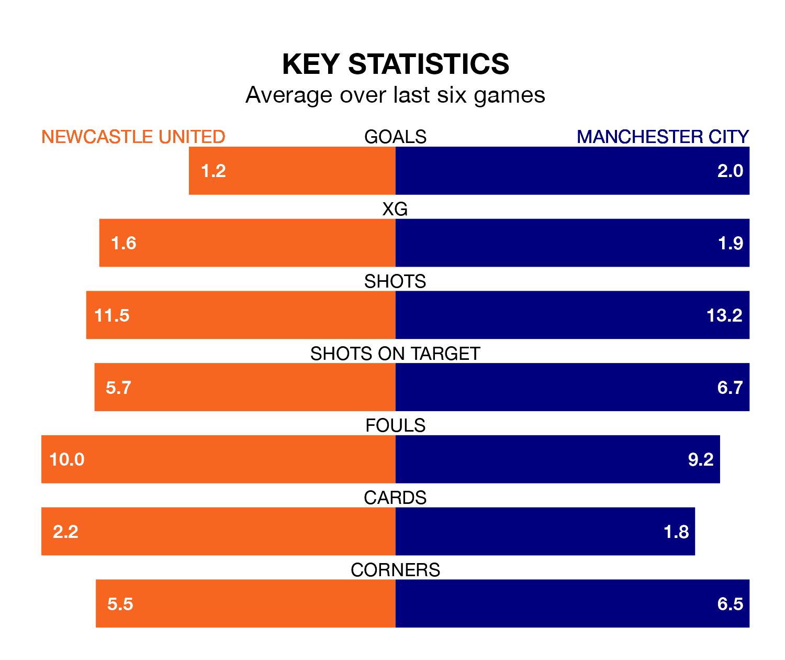

Manchester City are strong favourites to take all three points despite Newcastle United's home advantage in Saturday's late match at St. James' Park.
*Betting Company* are offering odds of 1.58 on City sealing the win, with the visitors sitting third in the Premier League table.
Newcastle, who are ninth in the league and 11 points behind the Citizens, are priced at 5.4 to win. A draw is set at 4.3.
With 45 goals in 19 games so far this season, City are the league's highest scorers with 2.4 goals per game. And they are conceding fewer than average, letting in 21 goals at a rate of 1.1 per game.
Newcastle are also above average scorers, with 2.0 goals per game, compared to a league average of 1.6. They have conceded 1.4 goals per game.
In Erling Haaland, the Citizens have the league's most on-form striker so far this season. He has notched 14 goals in 15 appearances.
His goal rate of one every 93 minutes is quicker than that of Alexander Isak, United's top scorer with a goal every 117 minutes, and a total of nine goals in 15 games.
The Magpies are in bad form in the Premier League, with one win and five losses from their last six games.
With three wins and two draws over that period, the visitors' form is much better – they have taken 11 points from 18, compared to the home team's three.
In the last 10 years, Newcastle and City have played each other on 20 occasions. Newcastle won three of them, City 14, and they drew three times.
On average, the Magpies scored 0.8 goals and the Citizens 2.5 in those matches.
Their last meeting was on September 27, when Newcastle won 1-0 at home.
Newcastle's last match was on January 1, a 4-2 loss against Liverpool, with Isak and Sven Botman getting the goals for the Magpies.
City beat Sheffield United 2-0 last time out, on December 30, with Julián Álvarez and Rodri on the scoresheet.
Updated: 11:29, 08/01/24